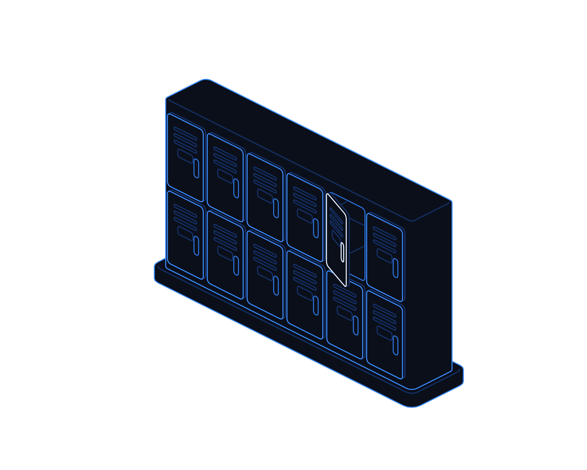
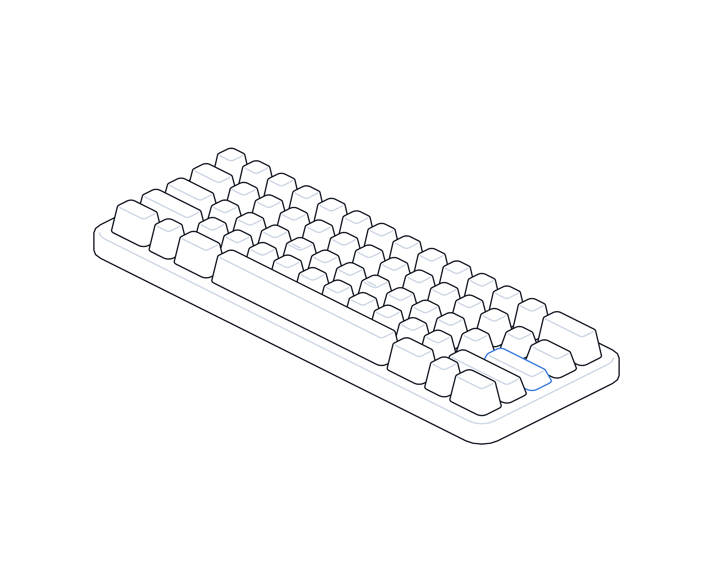

The Code That Opens the Door


Hot topics · Playbook
No. 11 · November 2026
Playbook No. 11 · Identity and phishing
The code that
opens the door.
Phishing that gets past MFA by sending staff to a genuine Microsoft sign-in page. How device code phishing works, and how to shut it down in your tenant.
Transputec playbooktransputec.com
Inside
Contents
A practical guide to device code phishing in Microsoft 365: how the trick works, why MFA does not stop it, and what to do this week, this month and this quarter.
Foreword03
Introduction04
01What happened06
02Close the flow10
03Prepare your people16
Sources24
 Contents
ContentsThe Code That Opens the Door · Hot Topics · Playbook02 / 25
Foreword
Your staff did everything right. The attacker still got in.
We have spent years teaching people to check the web address before they sign in. Device code phishing turns that advice against them. The victim is sent to a real Microsoft page, on a real Microsoft address, and asked to type in a short code. They sign in, approve their MFA prompt and carry on with their day.
What they have actually done is approve a sign-in for a device that belongs to an attacker. No password is stolen. No fake login page is involved. The attacker simply receives a working session to the victim's mailbox, files and Teams chats.
This technique has moved from targeted espionage to a commodity sold by subscription, and it featured again in threat roundups at the start of November 2026. The fix is not glamorous. Most organisations can switch off the sign-in method that makes it possible, prepare a fast response and give staff one clear rule. This playbook shows how.
The Transputec team
Transputec
Foreword The Code That Opens the Door · Hot Topics · Playbook03 / 25
Introduction
A real page, a fake reason.
Device code phishing abuses a legitimate Microsoft sign-in method built for televisions, printers and meeting room screens. The attacker supplies the code. The victim supplies the sign-in. This playbook covers three things.
Understand the trick
What device code phishing is, the campaigns behind it, and why multi-factor authentication does not stop it on its own.
Close the flow
Block or tightly restrict device code sign-in with Conditional Access, add stronger controls and know how to respond.
Prepare your people
Real lure examples, a simple rule for staff, help desk scripts and a plan for this week, this month and this quarter.
Introduction The Code That Opens the Door · Hot Topics · Playbook04 / 25
If you did not start it, do not type the code.
Device code phishing works because people trust the Microsoft page in front of them. The defence is to remove the sign-in method where you do not need it, and to teach one rule where you do.
Introduction The Code That Opens the Door · Hot Topics · Playbook05 / 25
01
Part 01
What
happened.
How an old sign-in method for televisions became one of the busiest phishing techniques of 2026.
01The trick in plain English
02How the attack works, step by step
03The campaigns behind it
Part 01 The Code That Opens the Door · Hot Topics · Playbook06 / 25
The news
A genuine page, a borrowed session
You sign in on Microsoft's real page. The attacker walks away with the session.
The trick is simple. Some devices, such as smart TVs and meeting room screens, have no proper keyboard. So Microsoft lets them show a short code and ask you to finish signing in on your phone or laptop. An attacker can ask Microsoft for one of these codes too, then send it to you dressed up as a meeting ID, a document code or a security check. Nothing about the page you land on is fake.
You visit a genuine Microsoft page, type the code and sign in as normal, including your MFA prompt. Microsoft then hands access and refresh tokens to the session that asked for the code: the attacker's. The code lasts 15 minutes by default, so lures now generate a fresh one when you click.1 Because the sign-in really is yours, checking the web address and approving MFA prove nothing here.
This is not new. In February 2025 Microsoft described a group it calls Storm-2372 using fake Teams meeting invitations against government, defence, health and other sectors. In July 2026 Microsoft said it now assesses that group as part of Midnight Blizzard.2 Proofpoint reported that by September 2025 the technique had spread to widespread campaigns, including by criminal groups.3
2026 brought scale. Microsoft linked EvilTokens, a phishing kit sold by subscription from February, to more than 12,000 compromised inboxes in over 10,000 organisations, with the UK among the most affected countries.4 Microsoft and partners disrupted it in September, and the Metropolitan Police arrested two men in connection with it.5
The trade has not stopped. On 29 October Group-IB described MadApe, a separate kit using PDF lures and fake SharePoint, OneDrive, Teams, Adobe and DocuSign pages, with device code components on 97 domains.6 Weekly threat roundups on 2 November listed device code phishing among the week's active techniques.7
The good news is that most staff never need this sign-in method. Microsoft's advice is to get as close as possible to blocking it outright and to allow it only for documented cases such as meeting room devices.8 That single control, a quick response plan and one clear rule for staff remove most of the risk.
What happened The Code That Opens the Door · Hot Topics · Playbook07 / 25
How it works
Four steps from lure to mailbox
Why MFA does not help here: the victim completes MFA themselves, for a session the attacker started.

01
The attacker asks for a code
Their tool requests a device sign-in from Microsoft and receives a short user code plus a link to microsoft.com/devicelogin.
02
The lure delivers it
An email, PDF, Teams chat or fake document page shows the code as a meeting ID, access code or security check.
03
The victim signs in for real
On the genuine Microsoft page they enter the code, their password and their MFA approval. Nothing looks wrong.
04
The attacker gets the tokens
The attacker's session receives access and refresh tokens. It can read mail, register a device and keep access after a password reset.
What happened The Code That Opens the Door · Hot Topics · Playbook08 / 25
The campaigns
Who has used it, and how
A selection of publicly reported activity. Figures are as reported by each source.
Campaign
What was reported
Lure
Storm-23722
Microsoft, Feb 2025: government, NGOs, defence, health, energy. Later linked to Midnight Blizzard.
Fake Teams meeting invitations after building rapport on WhatsApp, Signal or Teams.
Criminal wave3
Proofpoint, Dec 2025: state-aligned and criminal groups, widespread from September 2025.
Salary bonus documents, fake OneDrive shares, fake security prompts.
Huntress cluster9
More than 340 organisations in five countries from February 2026.
Construction bids, DocuSign, voicemail, Microsoft Forms.
EvilTokens4
Over 12,000 inboxes, 10,000+ organisations. Disrupted September 2026.
44 themes, including invoices, shared files and password expiry.
MadApe6
Group-IB, 29 Oct 2026: 155 root domains, 97 with device code parts.
Business PDFs, fake SharePoint, Teams, Adobe and DocuSign pages.
What happened The Code That Opens the Door · Hot Topics · Playbook09 / 25
02
Part 02
Close
the flow.
Switch off device code sign-in where you do not need it, protect the exceptions and be ready to respond.
01Block device code flow
02Handle the exceptions
03Layer the controls and respond fast
Part 02 The Code That Opens the Door · Hot Topics · Playbook10 / 25
Conditional Access
Block device code flow in six steps
Microsoft's recommended approach.8 Conditional Access needs Microsoft Entra ID P1, included in Microsoft 365 Business Premium.
01
Check who uses it today
In Entra sign-in logs, filter Authentication protocol to Device code flow. Note each user, app, location and owner.10
02
Look for a Microsoft-managed policy
Many tenants now have a Microsoft-managed 'Block device code flow' policy. Microsoft turns these on after at least 30 days in report-only.11
03
Create or adopt the block
All users, all resources, condition Authentication flows set to Device code flow, grant control Block access.
04
Exclude only what you must
Emergency access accounts and named exception groups. Exclude the Device Registration Service resource if devices register this way.
05
Run in report-only first
Review policy impact for a week or two. Talk to the owners of anything that would break.
06
Turn it on and keep watching
Switch to On, then review blocked sign-ins and exception group membership every month.
Close the flow The Code That Opens the Door · Hot Topics · Playbook11 / 25
Handling the exceptions
Some Teams Rooms and shared Teams devices need device code flow to register and re-authenticate. So do some admin and developer tools. Scope exceptions tightly.12
This week
List every device and tool that genuinely needs device code flow, with a named business owner for each.
This month
Put Teams device resource accounts in a dedicated exception group. Never exclude broad groups of ordinary users.
This quarter
Move admin and developer tools to browser or brokered sign-in, and automation to managed identities.
Check
An exception covers the whole account, not one app. Alert on any device code use by people outside the exception groups.
Owner
Microsoft 365 or identity lead
Bring this to the monthly review, with a date for each action.
Close the flow The Code That Opens the Door · Hot Topics · Playbook12 / 25
Layered controls
What each control does, and where it stops
Blocking the flow does most of the work. These controls narrow what is left.
Control
What it helps with
Its limit
Block device code flow
Removes the attack for everyone outside your exception groups.
Does not end sessions already issued. Revoke those separately.
Require compliant or joined devices
An attacker's own laptop fails the device check, so sign-ins are refused.3
Needs Intune or equivalent. Exceptions need care.
Phishing-resistant MFA (passkeys, FIDO2)
Stops fake login pages and is Microsoft's recommended MFA.
Does not stop this trick alone: the victim signs in on the real page.
Token protection
Accepts only device-bound tokens for Exchange, SharePoint and Teams on supported devices.13
Limited apps and platforms. Pilot in report-only.
Sign-in risk policies
Challenge or block sign-ins from unusual places and anonymous networks.
Needs Entra ID P2. Attackers use local proxies.
Mail and link protection
Safe Links, anti-phishing policies and zero-hour purge catch known lures.
New domains and PDFs slip through for a while.
Close the flow The Code That Opens the Door · Hot Topics · Playbook13 / 25
Monitoring
Five signals worth an alert
Most of these are in Entra sign-in logs and Microsoft Defender. Point your monitoring or managed service at them.
Any device code sign-in
Sign-ins where Authentication protocol is Device code flow, from users outside your exception groups.
Odd locations and hosting networks
Device code sign-ins from cloud hosting providers, anonymisers or countries where you have no staff.
New devices registered
A device registered to a user shortly after a device code sign-in. Storm-2372 used this to keep access.
New inbox rules
Rules that delete, hide or forward mail, often created minutes after the account is taken over.
Unusual mail and file access
Bulk reads, searches for words like password or invoice, and large downloads via Microsoft Graph.
Group-IB also suggests linking device code sign-ins with email link clicks in the same few minutes.6
Close the flow The Code That Opens the Door · Hot Topics · Playbook14 / 25
Response
If someone typed a code they should not have
Move fast. Changing the password alone does not end the attacker's session.
01
Confirm the sign-in
Check the user's sign-in logs for a device code sign-in at the time they entered the code.
02
Revoke sessions
Use Revoke sessions in the Entra admin centre or Revoke-MgUserSignInSession. Consider disabling the account briefly.14
03
Remember the one-hour tail
Access tokens last about an hour by default. Microsoft advises revoking and, if needed, temporarily disabling the account.4
04
Remove what they added
Delete unknown devices, inbox rules, forwarding, app consents and MFA methods registered during the incident.
05
Check what they did
Review mail sent, files accessed and any messages sent from the account to customers or suppliers.
06
Warn others
Search for the same lure in other mailboxes, purge it, and tell staff what to watch for.
Close the flow The Code That Opens the Door · Hot Topics · Playbook15 / 25
03
Part 03
Prepare
your people.
Show staff what the lures look like, give the help desk a script and agree a plan.
01Real lure examples
02Scenarios and help desk scripts
03Your week, month and quarter plan
Part 03 The Code That Opens the Door · Hot Topics · Playbook16 / 25
Real lures
What the lure looks like in practice
All four are drawn from published campaigns. Each ends at the genuine microsoft.com/devicelogin page.
The meeting ID that is not
A Teams or webinar invitation tells you to 'enter the meeting code' at a Microsoft page to join. Used by Storm-2372.2
The shared document
A SharePoint, OneDrive or DocuSign style page shows a code and a 'Continue to Microsoft' button.9
The invoice or voicemail
A PDF payment report, contract or voicemail notice links to a page that hands you a code.6
The security check
A message asks you to 're-verify' or confirm a one-time code because your password is expiring.3
The rule for staff: only type a code at microsoft.com/devicelogin if you are setting up a TV, printer or meeting room device yourself, right now.
Prepare your people The Code That Opens the Door · Hot Topics · Playbook17 / 25
Scenarios
Three moments your people will face
Finance
The supplier invoice PDF
What happens
A familiar-looking supplier sends a payment report. The link shows a code and a Microsoft button.
The risk
Mailbox takeover, then fake bank detail changes sent to real customers.
The right move
Close the page. Report it with the phishing button. Do not type the code.
Your control
Device code flow blocked, plus a payment change call-back rule.
Executive assistant
The invitation to a briefing
What happens
After friendly messages on WhatsApp, an invite asks them to enter a meeting code at a Microsoft page.
The risk
Access to the executive's mail, diary and Teams chats.
The right move
Real Teams meetings never need a code typed on a Microsoft sign-in page. Report it.
Your control
Block the flow, and brief executive support staff first.
Help desk
The worried caller
What happens
A user rings: they typed a code from an email ten minutes ago and approved MFA.
The risk
An attacker already holds a live session, even if the password changes.
The right move
Thank them, revoke sessions at once, escalate to security.
Your control
A written script and the rights to revoke sessions on first call.
Prepare your people The Code That Opens the Door · Hot Topics · Playbook18 / 25
Help desk scripts
What to say, and what to do next
Short scripts reduce hesitation. Praise people who report quickly: speed matters more than blame.
Situation
What to say
What happens next
User typed a code
'Thanks for calling straight away. I'm ending your sessions now; you'll need to sign in again.'
Revoke sessions, check logs, escalate to security.
User only saw the lure
'Please don't type the code. Use the Report button and delete it.'
Search for and purge the same message.
Code request on a call
'We never ask you to type a code we send you. I'll call you back on the number we hold.'
Log the call and alert security.
New meeting room device
'IT will sign the room in using its own room account.'
Use the Teams device exception group.
Blocked by the new policy
'That sign-in method is now switched off. Let's find another way to connect.'
Log the tool and its owner for review.
Prepare your people The Code That Opens the Door · Hot Topics · Playbook19 / 25
Your plan
This week, this month, this quarter
A realistic sequence for most UK organisations running Microsoft 365.
This week
Check sign-in logs for device code use. Put a block policy in report-only.
Microsoft 365 lead
This week
Send staff the one rule with the four lure examples. Brief the help desk.
IT lead with comms
This month
Turn the block on with tight exception groups. Test revoking sessions end to end.
Identity lead
This month
Alert on device code sign-ins, new device registrations and new inbox rules.
Security or managed provider
This quarter
Require compliant devices, roll out passkeys and pilot token protection.
IT and security
This quarter
Review exceptions, rerun the help desk drill and report results to the board.
CISO or IT director
Prepare your people The Code That Opens the Door · Hot Topics · Playbook20 / 25
Ask the question
Questions for the board and your suppliers
Use these at your next leadership meeting and supplier review.
For your leadership team
?Is device code sign-in blocked in our Microsoft 365 tenant, and who approved each exception?
?If a director typed a code today, how quickly could we end the attacker's session?
?Have our staff been shown what these lures actually look like?
For your IT provider or managed service
?Do you alert on device code sign-ins, new device registrations and suspicious inbox rules?
?Can your help desk revoke sessions on the first call, out of hours?
?When will we move from phone and app prompts to phishing-resistant MFA?
Questions The Code That Opens the Door · Hot Topics · Playbook21 / 25
Checklist
Is the door closed?
Tick what is in place. Anything blank is your next step.
Device code flow blocked by Conditional Access
Report-only first, then on.
Exceptions limited to named groups with owners
Teams device resource accounts and documented tools only.
Alerts on device code sign-ins and new devices
Plus new inbox rules and forwarding.
A tested way to revoke sessions in minutes
Including out of hours.
Staff shown the one rule and real lure examples
Help desk scripts written and rehearsed
A roadmap for compliant devices and passkeys
With token protection piloted where supported.
See the sources page for Microsoft's guidance on each control.
Checklist The Code That Opens the Door · Hot Topics · Playbook22 / 25
Glossary
Words worth knowing
Device code flow
A Microsoft sign-in method where one device shows a code and you finish signing in on another. Formally the OAuth 2.0 device authorisation grant.
microsoft.com/devicelogin
The genuine Microsoft page where device codes are entered.
Access token
A short-lived pass, about an hour by default, that lets an app read your mail or files.
Refresh token
A longer-lived token used to get new access tokens without signing in again.
Conditional Access
Microsoft Entra rules that decide who can sign in, from where, on what device and by which method.
Report-only mode
A setting that shows what a Conditional Access policy would do, without enforcing it.
Phishing-resistant MFA
Sign-in methods such as passkeys and FIDO2 keys that cannot be replayed on a fake site.
Token protection
A Conditional Access control that only accepts tokens bound to a registered device.
Revoke sessions
An admin action that invalidates a user's refresh tokens so they must sign in again.
Phishing as a service
Criminal kits sold by subscription, with templates, hosting and dashboards included.
Glossary The Code That Opens the Door · Hot Topics · Playbook23 / 25
Sources
Sources and notes
Sources were accessed in November 2026. Where reports differ, we say so in the text. Early reporting on live incidents can change.
1
Microsoft Learn, OAuth 2.0 device authorization grant, updated Jun 2026. learn.microsoft.com/entra/identity-platform/v2-oauth2-device-code
2
Microsoft Threat Intelligence, Storm-2372 conducts device code phishing campaign, 13 Feb 2025, updated 31 Jul 2026. microsoft.com/security/blog
3
Proofpoint, Access granted: phishing with device code authorization for account takeover, 18 Dec 2025. proofpoint.com/us/blog/threat-insight
4
Microsoft Security Blog, Unmasking EvilTokens: getting to the root of device code phishing, 22 Sep 2026. microsoft.com/security/blog
5
The Hacker News, Microsoft takes down EvilTokens device-code phishing service, 22 Sep 2026. thehackernews.com/2026/09/microsoft-takes-down-eviltokens-device.html
6
Group-IB, MadApe: the code that opens the door, 29 Oct 2026. group-ib.com/blog/madape-microsoft-device-code-phishing-kit
7
The Hacker News, Weekly recap: critical CVEs, Linux DDoS botnet, device-code phishing, 2 Nov 2026. thehackernews.com/2026/11/weekly-recap-critical-cves-linux-ddos.html
8
Microsoft Learn, Block authentication flows with Conditional Access policy, Mar 2026. learn.microsoft.com/entra/identity/conditional-access/policy-block-authentication-flows
9
The Hacker News, Device code phishing hits 340+ Microsoft 365 orgs (Huntress, Unit 42, Sekoia), 25 Mar 2026. thehackernews.com/2026/03/device-code-phishing-hits-340-microsoft.html
10
Microsoft Learn, Authentication flows as a condition in Conditional Access, Mar 2026. learn.microsoft.com/entra/identity/conditional-access/concept-authentication-flows
11
Microsoft Learn, Microsoft-managed Conditional Access policies, accessed Nov 2026. learn.microsoft.com/entra/identity/conditional-access/managed-policies
12
Microsoft Learn, Restrict device code flow for Microsoft Teams devices, May 2026. learn.microsoft.com/entra/identity/conditional-access/policy-teams-devices-device-code-flow
13
Microsoft Learn, Token protection in Conditional Access, Aug 2026. learn.microsoft.com/entra/identity/conditional-access/concept-token-protection
14
Microsoft Learn, Revoke user access in an emergency in Microsoft Entra ID, Jun 2026. learn.microsoft.com/entra/identity/users/users-revoke-access
Sources The Code That Opens the Door · Hot Topics · Playbook24 / 25
Close the door
for good.
We help UK organisations lock down Microsoft 365 sign-in, from Conditional Access and passkeys to round-the-clock monitoring, so a typed code never becomes a breach.
Talk to our security teamtransputec.com
Next in the series
No. 12 · Cold chain, hot target
Transputec · Hot Topics · No. 11